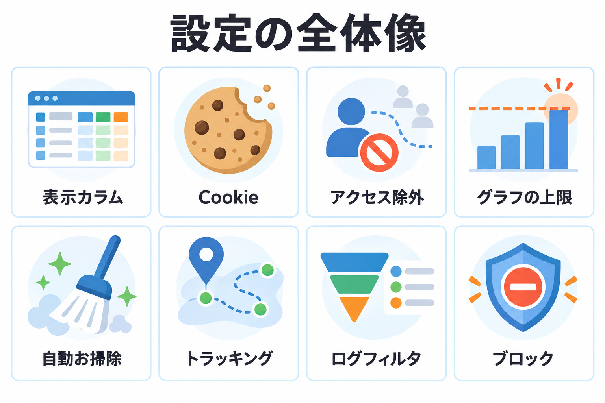
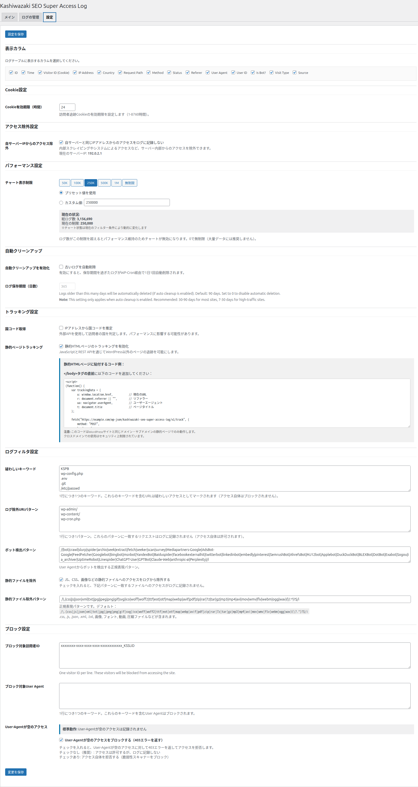
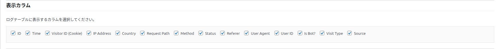
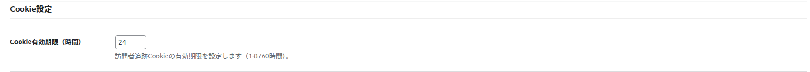
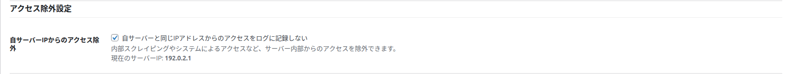
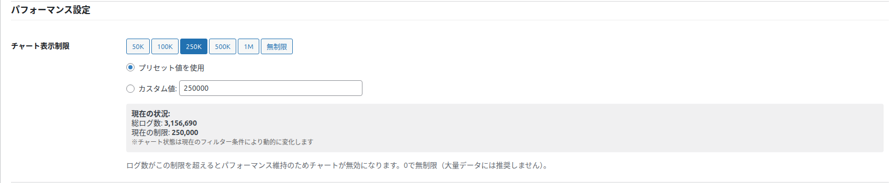
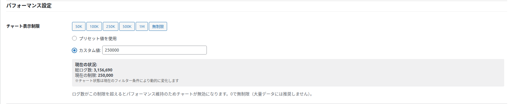
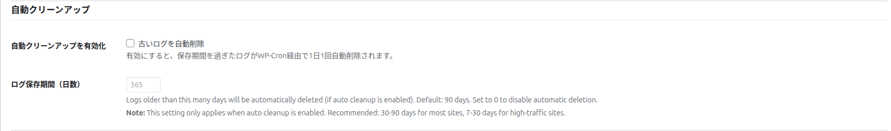
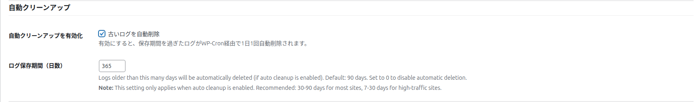

設定：表示と記録
「設定」タブの前半 6 つのまとまり（表示カラム・Cookie・アクセス除外・チャートの上限・自動クリーンアップ・トラッキング）の全項目を説明します。

設定の保存のしかた

項目を変えます。
いちばん上の「設定を保存」か、いちばん下の「変更を保存」を押します（どちらも同じです。すべての項目をまとめて保存します）。
「設定を保存しました。」と表示されれば完了です。保存すると、グラフや合計の一時的な保存（キャッシュ）が消え、次に表示したときに新しい設定で数え直します。
表示カラム

| 項目 | 内容 |
|---|---|
| 何をするか | メインタブのログ一覧に表示する列を選びます。記録する内容は変わりません（表示だけです）。 |
| 選べる列（14） | ID、Time、Visitor ID (Cookie)、IP Address、Country、Request Path、Method、Status、Referer、User Agent、User ID、Is Bot?、Visit Type、Source。各列の意味は「ログ一覧とブロック」。 |
| 初期値 | すべてオン |
| 注意点 | すべてのチェックを外して保存すると、すべての列を表示する状態に戻ります。 |
画面が横に長くなって見づらいときは、Method・User ID・Source など、あまり見ない列を外すと、残りの列が読みやすくなります。
Cookie設定

| 項目 | 内容 |
|---|---|
| 何をするか | 訪問者を見分ける Cookie を、何時間覚えておくかを決めます。 |
| 入力できる値 | 1〜8760 時間（8760 時間 = 1 年） |
| 初期値 | 24 時間 |
| 結果 | この時間の中に再び来た人は「リピーター」「ページ遷移」、過ぎてから来た人は「新規」として記録されます。長くするほど「新規」が減り、ユニーク訪問者の数も少なくなります。 |
「1 日に何人来たか」を見たいなら 24 時間（初期値）、「1 ヶ月に何人来たか」を重視するなら 720 時間（30 日）程度にします。途中で変えると、変えた前後で数字の意味が変わるので、決めたら長く変えないのがおすすめです。
アクセス除外設定

| 項目 | 内容 |
|---|---|
| 表示 | 「自サーバーと同じIPアドレスからのアクセスをログに記録しない」 |
| 何をするか | サーバー自身の IP アドレスからのアクセス（サーバーの中で動く定期処理や、ほかのプラグインの内部アクセスなど）を記録しません。下に「現在のサーバーIP」が表示されます（取得できないときは「取得できませんでした」）。 |
| 初期値 | オン |
| オフにすると | サーバー自身からのアクセスも記録します。 |
自分のパソコンからのアクセスを外したいときは、この項目ではなく、ログイン状態の絞り込み（「非ログイン」）や、「ログ除外URIパターン」を使ってください。
パフォーマンス設定（チャート表示制限）


| 項目 | 内容 |
|---|---|
| 何をするか | ログから直接数えてグラフを作るとき、件数がこの上限を超えたらグラフを作らないようにします。大量のログで画面が遅くなるのを防ぎます。 |
| プリセットのボタン | 50K（5 万）・100K（10 万）・250K（25 万）・500K（50 万）・1M（100 万）・無制限。押すと値が入り、ボタンが青くなります。保存ボタンを押すまでは反映されません。 |
| プリセット値を使用 / カスタム値 | カスタム値の欄に入力すると、自動で「カスタム値」が選ばれます。1000 以上、または 0（無制限）を入力します。1〜999 を入れて保存しようとすると「カスタム値は1000以上、または0（無制限）を指定してください。」と表示され、保存されません。 |
| 初期値 | 100K（10 万） |
| 現在の状況 | 「総ログ数」と「現在の制限」（0 なら「無制限」）を表示します。 |
期間と選択式の条件だけで絞り込んだとき（1 時間ごとの集計から表示するとき）は、件数が多くても速く表示できるので、この上限は使いません。上限が効くのは、IP アドレスやページなど文字の条件で絞り込んだときです。
自動クリーンアップ


| 項目 | 内容 |
|---|---|
| 自動クリーンアップを有効化（古いログを自動削除） | オンにすると、保存期間を過ぎたログを 1 日 1 回、自動で削除します。初期値は、新しく入れたサイトではオン、以前のバージョンから使っているサイトではオフです。 |
| ログ保存期間（日数） | 何日より古いログを削除するかです。初期値は 90 日。オフの間は入力できず、値も変わりません。オンにしたときに 0 なら 90 日になります。オンのときは 1 日以上です。 |
| 保存したときに起きること | オンで保存すると毎日の削除の予定を登録し、オフで保存すると予定を外します。 |
| 削除のしかた | 一度にたくさん消してサイトが重くならないよう、少しずつ（1 回 20 秒まで）削除し、残りは続けて削除します。ログの保存形式の移し替え中は行いません。 |
多くのサイトでは 30〜90 日、アクセスの多いサイトでは 7〜30 日が目安です。1 年分の推移を見たいなら 365 日にします。消したログは戻せないので、長く残したいログは先に CSV でエクスポートしておきましょう。
トラッキング設定
国コード取得（IPアドレスから国コードを推定）
| 項目 | 内容 |
|---|---|
| 何をするか | ブラウザの言語設定から国が分からないとき、IP アドレスから国を調べます。 |
| 初期値 | オフ |
| オンにすると | 外部の IP 位置情報サービス（ip-api.com）に訪問者の IP アドレスを送って調べます（暗号化されない通信・待ち時間は最大 1 秒）。結果は 7 日間覚えておきます。ボットには使いません。 |
| オフのままだと | 国はブラウザの言語設定からだけ推定します。 |
オンにすると、訪問者の IP アドレスが外部のサービスへ送られます。プライバシーポリシーへの記載を検討してください。国の決まり方は「記録のルール」。
静的ページトラッキング
WordPress ではない HTML だけのページのアクセスを記録する機能です。オンにして保存すると、貼り付け用のコードが表示されます。使い方は「静的ページの計測」で説明します。初期値はオフです。